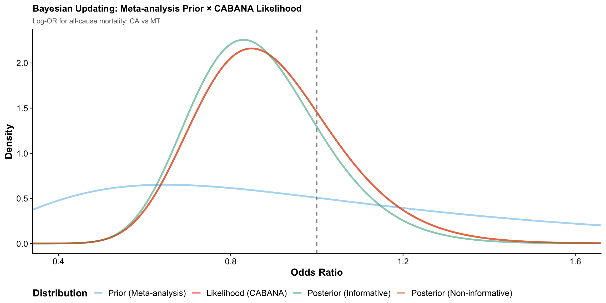
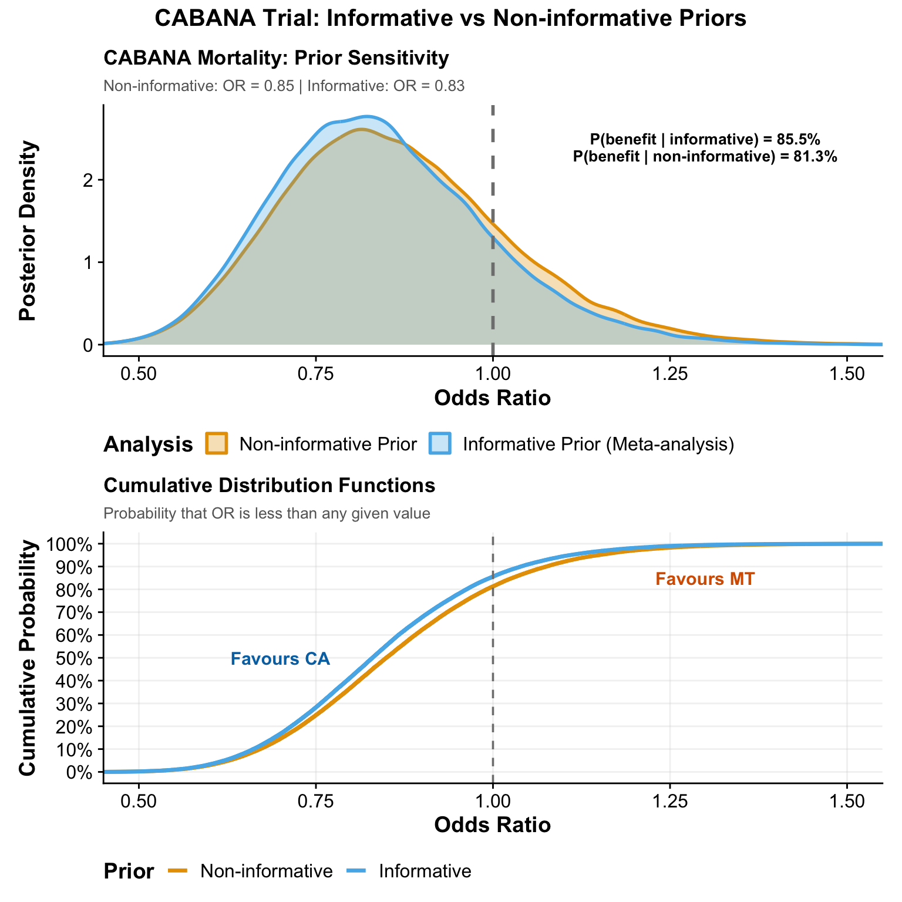

# Load packages
pacman::p_load(
tidyverse,
bayesmeta,
metafor,
cowplot,
scales,
patchwork,
glue
)
# Set seed for reproducibility
set.seed(42)Bayesian Meta-Analysis of Catheter Ablation vs. Medical Therapy with {bayesmeta}
Clinical question and overview
In atrial fibrillation, catheter ablation (CA) is widely used to improve symptoms and quality of life. But does it also reduce hard outcomes such as all-cause mortality when compared with medical therapy (MT)?
The CABANA trial was designed and analysed using frequentist methods and did not show a “statistically significant” mortality benefit for CA. However, a recent Bayesian re-analysis of CABANA1 and four similar trials suggested a high probability that CA improves survival.
In this tutorial you will:
Build a simple Bayesian random-effects meta-analysis using the
{bayesmeta}package.Learn how priors on the between-study heterogeneity (\(\tau\)) affect conclusions.
Visualise posterior distributions, forest plots with shrinkage, funnel plots, and a Baujat plot.
Use the meta-analytic result as an informative prior for CABANA, and compare it to a non-informative (also called a vague prior) analysis.
We use trial-level 2 × 2 tables (events / total in each arm) for all-cause mortality from four randomised trials that preceded CABANA.
Data preparation
Trials and event counts
We analyse four randomized trials comparing CA vs MT on all-cause mortality:
A4
MANTRA-PAF
Stabile 2006 (Catheter Ablation for the Cure of AF Study)
ThermoCool AF
For each trial we need:
deaths in CA group (e_ca),
total in CA group (n_ca),
deaths in MT group (e_mt),
total in MT group (n_mt).
These are taken from Table 1 in the original paper1 .
df_meta <- tibble(
study = c("A4", "MANTRA-PAF", "Stabile 2006", "ThermoCool AF"),
e_ca = c(0, 3, 1, 1), # deaths in CA group
n_ca = c(53, 146, 68, 106),
e_mt = c(2, 4, 2, 0), # deaths in MT group
n_mt = c(59, 148, 69, 61)
)
df_meta |>
mutate(
mort_rate_ca = percent(e_ca / n_ca, accuracy = 0.1),
mort_rate_mt = percent(e_mt / n_mt, accuracy = 0.1)
) |>
knitr::kable(
caption = "All-cause mortality in four AF trials comparing catheter ablation vs medical therapy"
)| study | e_ca | n_ca | e_mt | n_mt | mort_rate_ca | mort_rate_mt |
|---|---|---|---|---|---|---|
| A4 | 0 | 53 | 2 | 59 | 0.0% | 3.4% |
| MANTRA-PAF | 3 | 146 | 4 | 148 | 2.1% | 2.7% |
| Stabile 2006 | 1 | 68 | 2 | 69 | 1.5% | 2.9% |
| ThermoCool AF | 1 | 106 | 0 | 61 | 0.9% | 0.0% |
From 2×2 tables to effect sizes
We use the log odds ratio (log-OR) as the effect size. Values:
log-OR < 0 → OR < 1 → favours CA (lower odds of death)
log-OR > 0 → OR > 1 → favours MT
The {metafor} function escalc() conveniently converts counts to log-OR and its sampling variance.
meta_es <- escalc(
measure = "OR",
ai = e_ca,
bi = n_ca - e_ca,
ci = e_mt,
di = n_mt - e_mt,
data = df_meta,
slab = study
)
y <- meta_es$yi # log-ORs
sigma <- sqrt(meta_es$vi) # standard errors
labels <- meta_es$study # study labels
effect_size_df <- tibble(
Study = labels,
LogOR = round(y, 3),
SE = round(sigma, 3),
OR = round(exp(y), 3)
)
effect_size_df |>
knitr::kable(
caption = "Study-level log-odds ratios (CA vs MT) with standard errors and odds ratios"
)| Study | LogOR | SE | OR |
|---|---|---|---|
| A4 | -1.537 | 1.561 | 0.215 |
| MANTRA-PAF | -0.281 | 0.773 | 0.755 |
| Stabile 2006 | -0.693 | 1.237 | 0.500 |
| ThermoCool AF | 0.559 | 1.641 | 1.749 |
Bayesian meta-analysis with different \(\tau\) priors
We fit Bayesian random-effects meta-analysis models with {bayesmeta}.
Key parameters:
μ (mu): overall mean log-OR (pooled treatment effect).
τ (tau): between-study standard deviation (heterogeneity).
We assume:
Likelihood: each study’s log-OR \(y_i \sim N(\theta_i, \sigma_i^2)\)
Study-specific effects: \(\theta_i \sim N(\mu, \tau^2)\)
We fit three models that differ only in the prior for τ:
Half-Normal(0, 0.5) — weakly informative, commonly recommended for log-ORs.
Uniform(0, 0.5) — more restrictive heterogeneity.
Uniform(0, 2) — very vague, allowing large heterogeneity.
# Model 1: Half-normal prior for tau (scale = 0.5)
bma_halfnormal <- bayesmeta(
y = y,
sigma = sigma,
labels = labels,
tau.prior = \(t) dhalfnormal(t, scale = 0.5),
mu.prior.mean = 0,
mu.prior.sd = 4
)
# Model 2: Uniform(0, 0.5) prior for tau (more restrictive)
bma_informative <- bayesmeta(
y = y,
sigma = sigma,
labels = labels,
tau.prior = \(t) dunif(t, min = 0, max = 0.5),
mu.prior.mean = 0,
mu.prior.sd = 4
)
# Model 3: Uniform(0, 2) prior for tau (very vague)
bma_vague <- bayesmeta(
y = y,
sigma = sigma,
labels = labels,
tau.prior = \(t) dunif(t, min = 0, max = 2),
mu.prior.mean = 0,
mu.prior.sd = 10
)Helper to summarise {bayesmeta} models
The internal structure of a bayesmeta object:
bma_model$summary: matrix withrows:
"mode","median","mean","sd","95% lower","95% upper"columns:
"tau","mu"
Important
We must index as summary["mean", "mu"] (statistic first, parameter second).
We also obtain \(P(\mu < 0)\) directly via pposterior(mu = 0).
display_results <- function(bma_model, model_name) {
s <- bma_model$summary
# Posterior summaries for mu and tau
mu_summary <- s[c("mean", "sd", "95% lower", "95% upper"), "mu"]
tau_summary <- s[c("mean", "sd", "95% lower", "95% upper"), "tau"]
mu_mean <- mu_summary["mean"]
mu_sd <- mu_summary["sd"]
mu_lower <- mu_summary["95% lower"]
mu_upper <- mu_summary["95% upper"]
tau_mean <- tau_summary["mean"]
tau_sd <- tau_summary["sd"]
tau_lower <- tau_summary["95% lower"]
tau_upper <- tau_summary["95% upper"]
# Transform to odds-ratio scale
or_mean <- exp(mu_mean)
or_lower <- exp(mu_lower)
or_upper <- exp(mu_upper)
# Probability that CA is beneficial: P(mu < 0)
prob_benefit <- 100 * bma_model$pposterior(mu = 0)
tibble(
model = model_name,
mu_mean = mu_mean,
mu_sd = mu_sd,
mu_lower = mu_lower,
mu_upper = mu_upper,
tau_mean = tau_mean,
tau_sd = tau_sd,
tau_lower = tau_lower,
tau_upper = tau_upper,
or_mean = or_mean,
or_lower = or_lower,
or_upper = or_upper,
prob_benefit = prob_benefit
)
}Summarise all three models
results_halfnormal <- display_results(bma_halfnormal, "Half-Normal(0, 0.5) Prior")
results_informative <- display_results(bma_informative, "Uniform(0, 0.5) Prior")
results_vague <- display_results(bma_vague, "Uniform(0, 2) Prior")
bind_rows(results_halfnormal, results_informative, results_vague) |>
mutate(
across(
starts_with("or_"),
\(x) round(x, 3)
),
prob_benefit = round(prob_benefit, 1)
) |>
knitr::kable(
caption = "Posterior summaries for pooled log-OR and OR under different tau priors"
)| model | mu_mean | mu_sd | mu_lower | mu_upper | tau_mean | tau_sd | tau_lower | tau_upper | or_mean | or_lower | or_upper | prob_benefit |
|---|---|---|---|---|---|---|---|---|---|---|---|---|
| Half-Normal(0, 0.5) Prior | -0.4328966 | 0.6127321 | -1.637333 | 0.7706681 | 0.3489740 | 0.2671463 | 0 | 0.8657171 | 0.649 | 0.194 | 2.161 | 76.2 |
| Uniform(0, 0.5) Prior | -0.4291801 | 0.5838126 | -1.574198 | 0.7155576 | 0.2424586 | 0.1434022 | 0 | 0.4720758 | 0.651 | 0.207 | 2.045 | 76.9 |
| Uniform(0, 2) Prior | -0.4547477 | 0.7522766 | -1.957575 | 1.0403888 | 0.7425182 | 0.5264177 | 0 | 1.7513312 | 0.635 | 0.141 | 2.830 | 73.9 |
Interpretation (for clinicians):
or_mean< 1 suggests lower odds of death with CA.prob_benefitgives the probability that CA is better than MT, in %, under each τ prior.
Forest plot with Bayesian shrinkage
Each study provides its own estimate of log-OR with some uncertainty.
The Bayesian model “shrinks” these estimates towards the pooled mean, especially for small or imprecise studies.
bma_halfnormal$theta contains these shrinkage estimates:
rows:
"mode","median","mean","sd","95% lower","95% upper"columns: one per study.
# Study-specific posterior summaries (shrinkage) from half-normal model
study_effects <- tibble(
study = labels,
observed_y = y,
observed_se = sigma,
posterior_mean = map_dbl(seq_along(y), ~ bma_halfnormal$theta["mean", .x]),
posterior_lower = map_dbl(seq_along(y), ~ bma_halfnormal$theta["95% lower", .x]),
posterior_upper = map_dbl(seq_along(y), ~ bma_halfnormal$theta["95% upper", .x])
)
overall_effect <- tibble(
study = "Overall (Bayesian)",
observed_y = results_halfnormal$mu_mean,
observed_se = results_halfnormal$mu_sd,
posterior_mean = results_halfnormal$mu_mean,
posterior_lower = results_halfnormal$mu_lower,
posterior_upper = results_halfnormal$mu_upper
)
forest_data <- bind_rows(study_effects, overall_effect) |>
mutate(
study = factor(study, levels = rev(c(labels, "Overall (Bayesian)"))),
is_overall = study == "Overall (Bayesian)",
or_posterior = exp(posterior_mean),
or_lower = exp(posterior_lower),
or_upper = exp(posterior_upper)
)
forest_plot <- ggplot(forest_data, aes(y = study)) +
geom_linerange(
aes(xmin = or_lower, xmax = or_upper),
linewidth = 0.9,
colour = "#333333"
) +
geom_point(
aes(x = or_posterior, fill = is_overall, shape = is_overall),
size = 3.8,
colour = "#333333"
) +
geom_vline(xintercept = 1, linetype = "dashed", colour = "gray50") +
scale_x_log10(
breaks = c(0.1, 0.25, 0.5, 1, 2, 4),
labels = c("0.1", "0.25", "0.5", "1", "2", "4")
) +
scale_shape_manual(values = c(21, 23), guide = "none") +
scale_fill_manual(
values = c("FALSE" = "#56B4E9", "TRUE" = "#009E73"), guide = "none"
) +
labs(
x = "Odds Ratio (CA vs MT, 95% Credible Interval)",
y = NULL,
title = "Bayesian Meta-Analysis: Catheter Ablation vs Medical Therapy",
subtitle = "Values < 1 favour catheter ablation (lower odds of death)"
) +
annotate(
"text",
x = 0.2, y = 0.5, label = "Favours CA",
size = 3.3, fontface = "italic", colour = "#0072B2"
) +
annotate(
"text",
x = 2.15, y = 0.5, label = "Favours MT",
size = 3.3, fontface = "italic", colour = "#D55E00"
) +
theme_minimal(base_size = 11) +
theme(
plot.title = element_text(face = "bold", size = 14),
plot.subtitle = element_text(size = 11, colour = "gray40"),
axis.text.y = element_text(size = 10),
axis.title.x = element_text(face = "bold", margin = margin(t = 10)),
panel.grid.major.y = element_blank(),
panel.grid.minor = element_blank()
)
forest_plot
Posterior distributions for μ and τ
We now examine the full posterior distributions of:
μ (overall log-OR) → transformed to OR
τ (between-study heterogeneity)
We draw samples using the rposterior() function.
n_samples <- 200000
post_draws <- bma_halfnormal$rposterior(n = n_samples)
mu_samples <- post_draws[, "mu"]
tau_samples <- post_draws[, "tau"]
posterior_data <- tibble(
log_or = mu_samples,
or = exp(log_or),
tau = tau_samples
)
posterior_mu_plot <- posterior_data |>
mutate(region = if_else(log_or < 0, "benefit", "harm")) |>
ggplot(aes(x = or)) +
geom_density(
fill = "#56B4E9",
alpha = 0.3,
colour = "#333333",
linewidth = 1
) +
geom_area(
stat = "density",
data = ~ filter(.x, region == "benefit"),
fill = "#009E73", alpha = 0.5
) +
geom_area(
stat = "density",
data = ~ filter(.x, region == "harm"),
fill = "#D55E00", alpha = 0.5
) +
geom_vline(
xintercept = 1,
linetype = "dashed",
linewidth = 1,
colour = "black"
) +
geom_vline(
xintercept = results_halfnormal$or_mean,
linetype = "solid", linewidth = 1, colour = "grey40"
) +
coord_cartesian(xlim = c(0.2, 2)) +
scale_x_continuous(breaks = seq(0.2, 2, 0.2)) +
labs(
title = "Posterior Distribution of Overall Effect (OR)",
subtitle = glue(
"OR = {round(results_halfnormal$or_mean, 2)} ",
"(95% CrI: {round(results_halfnormal$or_lower, 2)}–",
"{round(results_halfnormal$or_upper, 2)})"
),
x = "Odds Ratio (CA vs MT)",
y = "Posterior Density"
) +
annotate(
"text",
x = 0.4, y = Inf, vjust = 2,
label = glue(
"P(benefit) = {round(results_halfnormal$prob_benefit, 1)}%"
),
colour = "#0072B2",
fontface = "bold",
size = 4
) +
annotate(
"text",
x = 1.6, y = Inf, vjust = 2,
label = glue(
"P(harm) = {round(100 - results_halfnormal$prob_benefit, 1)}%"
),
colour = "#D55E00",
fontface = "bold",
size = 4
) +
theme_cowplot() +
theme(
plot.title = element_text(face = "bold", size = 13),
plot.subtitle = element_text(size = 10, colour = "grey40"),
axis.title = element_text(face = "bold")
)
posterior_tau_plot <- ggplot(posterior_data, aes(x = tau)) +
geom_density(
fill = "#F0E442",
alpha = 0.5,
colour = "#333333",
linewidth = 1
) +
geom_vline(
xintercept = results_halfnormal$tau_mean,
linetype = "solid", linewidth = 1, colour = "#333333"
) +
coord_cartesian(xlim = c(0, 1)) +
labs(
title = "Posterior Distribution of Heterogeneity (τ)",
subtitle = glue(
"τ = {round(results_halfnormal$tau_mean, 3)} ",
"(between-study SD on log-OR scale)"
),
x = "Heterogeneity (τ)",
y = "Posterior Density"
) +
annotate(
"text",
x = 0.75, y = Inf, vjust = 2,
label = "Low τ: studies similar\nHigh τ: studies more heterogeneous",
size = 3.5,
colour = "gray30",
lineheight = 0.9
) +
theme_cowplot() +
theme(
plot.title = element_text(face = "bold", size = 13),
plot.subtitle = element_text(size = 10, colour = "gray40"),
axis.title = element_text(face = "bold")
)
posterior_mu_plot / posterior_tau_plot
Funnel plot (publication bias check)
A funnel plot shows effect size vs. precision (1 / SE).
If small studies with unfavourable results are missing, the funnel may appear asymmetric.
funnel_data <- tibble(
study = labels,
log_or = y,
se = sigma,
or = exp(log_or)
) |>
arrange(se)
se_seq <- seq(0, max(funnel_data$se) * 1.1, length.out = 100)
overall_logOR <- results_halfnormal$mu_mean
funnel_ci <- tibble(
se = rep(se_seq, 2),
log_or = c(
overall_logOR + qnorm(0.975) * se_seq,
overall_logOR - qnorm(0.975) * se_seq
),
bound = rep(c("upper", "lower"), each = length(se_seq))
) |>
mutate(or = exp(log_or)) |>
select(se, bound, or) |>
pivot_wider(names_from = bound, values_from = or)
funnel_plot <- ggplot() +
geom_ribbon(
data = funnel_ci,
aes(x = se, ymin = lower, ymax = upper),
fill = "#56B4E9", alpha = 0.3
) +
geom_hline(
yintercept = results_halfnormal$or_mean,
linetype = "dashed", colour = "#333333", linewidth = 1
) +
geom_hline(yintercept = 1, linetype = "solid", colour = "gray70") +
geom_point(
data = funnel_data,
aes(x = se, y = or),
size = 4, colour = "#333333", fill = "#F0E442", shape = 21, stroke = 1.2
) +
geom_text(
data = funnel_data,
aes(x = se, y = or, label = study),
hjust = -0.2, size = 3, fontface = "italic"
) +
scale_y_log10(
breaks = c(0.1, 0.25, 0.5, 1, 2, 4, 8),
labels = c("0.1", "0.25", "0.5", "1", "2", "4", "8")
) +
scale_x_reverse() +
coord_flip() +
labs(
title = "Funnel Plot: CA vs MT Meta-Analysis",
subtitle = "Asymmetry may indicate missing studies or publication bias",
x = "Standard Error (larger = less precise)",
y = "Odds Ratio (log scale)"
) +
theme_minimal(base_size = 11) +
theme(
plot.title = element_text(face = "bold", size = 13),
plot.subtitle = element_text(size = 10, colour = "gray40"),
axis.title = element_text(face = "bold"),
panel.grid.minor = element_blank()
)
funnel_plot
Baujat plot: influence and heterogeneity
A Baujat plot helps identify which studies:
contribute most to between-study heterogeneity, and
have the largest influence on the pooled effect.
Here we use a standard random-effects meta-analysis with {metafor} purely for this diagnostic plot.
rma_re <- rma(yi = y, vi = sigma^2, method = "REML", slab = labels)
baujat(
rma_re,
main = "Baujat Plot: Contribution to Heterogeneity and Influence",
xlab = "Contribution to Q (heterogeneity)",
ylab = "Influence on pooled effect"
)
CABANA trial: using meta-analysis as an informative prior
We now treat the meta-analysis of the four pre-CABANA trials as an informative prior for CABANA’s mortality effect.
CABANA mortality data (2×2 table)
CABANA all-cause mortality counts:
CA: 58 deaths / 1108
MT: 67 deaths / 1096
cabana_2_2 <- matrix(
c(
58, 1108 - 58, # CA: deaths, survivors
67, 1096 - 67 # MT: deaths, survivors
),
nrow = 2, byrow = TRUE,
dimnames = list(
group = c("CA", "MT"),
outcome = c("death", "survive")
)
)
cabana_2_2 outcome
group death survive
CA 58 1050
MT 67 1029Log-OR and SE for CABANA
We again work on the log-OR scale.
log_or_cabana <- log((58 / (1108 - 58)) / (67 / (1096 - 67)))
se_cabana <- sqrt(1 / 58 + 1 / (1108 - 58) + 1 / 67 + 1 / (1096 - 67))
c(
log_or = log_or_cabana,
se = se_cabana,
OR = exp(log_or_cabana)
) log_or se OR
-0.1644523 0.1846373 0.8483582 Conjugate normal–normal updating
On the log-OR scale, we approximate:
Prior from meta-analysis: \(μ ~ N(μ₀, σ₀²)\)
Likelihood from CABANA (Wald approximation): \(μ | data ~ N(ŷ, s²)\)
Then:
Posterior precision: 1/σ² = 1/σ₀² + 1/s²
Posterior mean: μ* = (μ₀/σ₀² + ŷ/s²) / (1/σ₀² + 1/s²)
We also contrast this informative prior with a practically non-informative prior (very large variance).
# Prior from meta-analysis (half-normal τ model)
prior_mean <- results_halfnormal$mu_mean[[1]]
prior_sd <- results_halfnormal$mu_sd[[1]]
prior_prec <- 1 / prior_sd^2
# Likelihood from CABANA
lik_mean <- log_or_cabana
lik_sd <- se_cabana
lik_prec <- 1 / lik_sd^2
# Posterior with informative prior
post_prec <- prior_prec + lik_prec
post_sd <- sqrt(1 / post_prec)
post_mean <- (prior_prec * prior_mean + lik_prec * lik_mean) / post_prec
# Posterior with effectively non-informative prior (very large SD)
ni_prior_sd <- 100
ni_prior_prec <- 1 / ni_prior_sd^2
post_ni_prec <- ni_prior_prec + lik_prec
post_ni_sd <- sqrt(1 / post_ni_prec)
post_ni_mean <- (ni_prior_prec * 0 + lik_prec * lik_mean) / post_ni_prec
# Probability of benefit: OR < 1 ⇒ log-OR < 0
prob_benefit_ni <- 100 * pnorm(0, mean = post_ni_mean, sd = post_ni_sd)
prob_benefit_inf <- 100 * pnorm(0, mean = post_mean, sd = post_sd)
post_means <- c(post_ni_mean, post_mean)
post_sds <- c(post_ni_sd, post_sd)
post_OR <- exp(post_means)
lower_95 <- exp(post_means - 1.96 * post_sds)
upper_95 <- exp(post_means + 1.96 * post_sds)
prob_benefit <- c(prob_benefit_ni, prob_benefit_inf)
tibble(
analysis = c("Non-informative prior", "Informative prior (meta-analysis)"),
post_logOR = post_means,
post_sd = post_sds,
post_OR = post_OR,
lower_95 = lower_95,
upper_95 = upper_95,
prob_benefit = prob_benefit
) |>
mutate(
across(starts_with("post_"), \(x) round(x, 3)),
prob_benefit = round(prob_benefit, 1)
) |>
knitr::kable(
caption = "CABANA mortality: posterior summaries using non-informative vs informative priors."
)| analysis | post_logOR | post_sd | post_OR | lower_95 | upper_95 | prob_benefit |
|---|---|---|---|---|---|---|
| Non-informative prior | -0.164 | 0.185 | 0.848 | 0.5907630 | 1.218276 | 81.3 |
| Informative prior (meta-analysis) | -0.187 | 0.177 | 0.830 | 0.5866669 | 1.173160 | 85.5 |
Visualising prior, likelihood, and posterior
We now show how the:
prior (meta-analysis),
likelihood (CABANA), and
posterior (updated belief)
combine on the OR scale.
or_seq <- seq(0.3, 2, length.out = 500)
log_or_seq <- log(or_seq)
density_data <- tibble(
or = or_seq,
log_or = log_or_seq,
prior = dnorm(log_or_seq, mean = prior_mean, sd = prior_sd),
likelihood = dnorm(log_or_seq, mean = lik_mean, sd = lik_sd),
posterior = dnorm(log_or_seq, mean = post_mean, sd = post_sd),
posterior_ni = dnorm(log_or_seq, mean = post_ni_mean, sd = post_ni_sd)
) |>
pivot_longer(
cols = c(prior, likelihood, posterior, posterior_ni),
names_to = "distribution",
values_to = "density"
) |>
mutate(
distribution = factor(
distribution,
levels = c("prior", "likelihood", "posterior", "posterior_ni"),
labels = c(
"Prior (Meta-analysis)",
"Likelihood (CABANA)",
"Posterior (Informative)",
"Posterior (Non-informative)"
)
)
)
ggplot(density_data, aes(x = or, y = density, colour = distribution)) +
geom_line(linewidth = 1.2, alpha = 0.5) +
geom_vline(xintercept = 1, linetype = "dashed", colour = "gray50") +
coord_cartesian(xlim = c(0.4, 1.6)) +
scale_color_manual(
values = c(
"Prior (Meta-analysis)" = "#56B4E9",
"Likelihood (CABANA)" = "red",
"Posterior (Informative)" = "#009E73",
"Posterior (Non-informative)" = "#D55E00"
)
) +
labs(
title = "Bayesian Updating: Meta-analysis Prior × CABANA Likelihood",
subtitle = "Log-OR for all-cause mortality: CA vs MT",
x = "Odds Ratio",
y = "Density",
colour = "Distribution"
) +
theme_cowplot() +
theme(
plot.title = element_text(face = "bold", size = 13),
plot.subtitle = element_text(size = 10, colour = "gray40"),
legend.position = "bottom",
legend.title = element_text(face = "bold"),
axis.title = element_text(face = "bold")
)
Prior sensitivity for CABANA
How much does the prior actually matter?
We compare the posterior OR distributions for CABANA under:
Non-informative prior
Informative prior based on the meta-analysis
n_samples_viz <- 100000
comparison_data <- tibble(
log_or_inform = rnorm(n_samples_viz, post_mean, post_sd),
log_or_noninfo = rnorm(n_samples_viz, post_ni_mean, post_ni_sd)
) |>
mutate(
or_inform = exp(log_or_inform),
or_noninfo = exp(log_or_noninfo)
)
pdf_comparison <- comparison_data |>
pivot_longer(
cols = c(or_inform, or_noninfo),
names_to = "prior_type",
values_to = "or"
) |>
mutate(
prior_type = factor(
prior_type,
levels = c("or_noninfo", "or_inform"),
labels = c("Non-informative Prior", "Informative Prior (Meta-analysis)")
)
) |>
ggplot(aes(x = or, fill = prior_type, colour = prior_type)) +
geom_density(alpha = 0.3, linewidth = 1) +
geom_vline(xintercept = 1, linetype = "dashed", colour = "gray50", linewidth = 1) +
scale_fill_manual(
values = c(
"Non-informative Prior" = "#E69F00",
"Informative Prior (Meta-analysis)" = "#56B4E9"
)
) +
scale_color_manual(
values = c(
"Non-informative Prior" = "#E69F00",
"Informative Prior (Meta-analysis)" = "#56B4E9"
)
) +
coord_cartesian(xlim = c(0.5, 1.5)) +
labs(
title = "CABANA Mortality: Prior Sensitivity",
subtitle = glue(
"Non-informative: OR = {round(exp(post_ni_mean), 2)} | ",
"Informative: OR = {round(exp(post_mean), 2)}"
),
x = "Odds Ratio",
y = "Posterior Density",
fill = "Analysis",
colour = "Analysis"
) +
annotate(
"text",
x = 1.3, y = Inf, vjust = 2,
label = glue(
"P(benefit | informative) = {round(prob_benefit_inf, 1)}%\n",
"P(benefit | non-informative) = {round(prob_benefit_ni, 1)}%"
),
size = 3.5, fontface = "bold", lineheight = 0.9
) +
theme_cowplot() +
theme(
plot.title = element_text(face = "bold", size = 13),
plot.subtitle = element_text(size = 10, colour = "gray40"),
legend.position = "bottom",
legend.title = element_text(face = "bold"),
axis.title = element_text(face = "bold")
)
cdf_comparison <- comparison_data |>
pivot_longer(
cols = c(or_inform, or_noninfo),
names_to = "prior_type",
values_to = "or"
) |>
mutate(
prior_type = factor(
prior_type,
levels = c("or_noninfo", "or_inform"),
labels = c("Non-informative", "Informative")
)
) |>
group_by(prior_type) |>
arrange(or, .by_group = TRUE) |>
mutate(cdf = row_number() / n()) |>
ungroup() |>
ggplot(aes(x = or, y = cdf, colour = prior_type)) +
geom_line(linewidth = 1.2) +
geom_vline(xintercept = 1, linetype = "dashed", colour = "gray50") +
scale_color_manual(
values = c("Non-informative" = "#E69F00", "Informative" = "#56B4E9")
) +
scale_y_continuous(
breaks = seq(0, 1, 0.1),
labels = percent
) +
coord_cartesian(xlim = c(0.5, 1.5)) +
labs(
title = "Cumulative Distribution Functions",
subtitle = "Probability that OR is less than any given value",
x = "Odds Ratio",
y = "Cumulative Probability",
colour = "Prior"
) +
annotate(
"text",
x = 0.7, y = 0.5,
label = "Favours CA",
colour = "#0072B2", fontface = "bold", size = 4
) +
annotate(
"text",
x = 1.3, y = 0.85,
label = "Favours MT",
colour = "#D55E00", fontface = "bold", size = 4
) +
theme_cowplot() +
theme(
plot.title = element_text(face = "bold", size = 13),
plot.subtitle = element_text(size = 10, colour = "gray40"),
legend.position = "bottom",
legend.title = element_text(face = "bold"),
axis.title = element_text(face = "bold"),
panel.grid.major = element_line(colour = alpha("lightgray", 0.3))
)
pdf_comparison / cdf_comparison +
plot_annotation(
title = "CABANA Trial: Informative vs Non-informative Priors",
theme = theme(plot.title = element_text(face = "bold", size = 15, hjust = 0.5))
)
Prior sensitivity for τ in the meta-analysis
Finally, we examine how different priors on τ (heterogeneity) affect the pooled effect on mortality.
tau_priors <- list(
"Uniform(0, 0.5)" = \(t) dunif(t, 0, 0.5),
"Uniform(0, 1)" = \(t) dunif(t, 0, 1),
"Uniform(0, 2)" = \(t) dunif(t, 0, 2)
)
sensitivity_results <- map_dfr(names(tau_priors), function(prior_name) {
bma_temp <- bayesmeta(
y = y,
sigma = sigma,
labels = labels,
tau.prior = tau_priors[[prior_name]],
mu.prior.mean = 0,
mu.prior.sd = 4
)
s <- bma_temp$summary
mu_mean <- s["mean", "mu"]
mu_lower <- s["95% lower", "mu"]
mu_upper <- s["95% upper", "mu"]
tau_mean <- s["mean", "tau"]
tibble(
prior = prior_name,
mu_mean = mu_mean,
mu_lower = mu_lower,
mu_upper = mu_upper,
tau_mean = tau_mean,
or_mean = exp(mu_mean),
or_lower = exp(mu_lower),
or_upper = exp(mu_upper)
)
})
sensitivity_results |>
mutate(
across(starts_with("or_"), \(x) round(x, 3)),
tau_mean = round(tau_mean, 3)
) |>
knitr::kable(
caption = "Sensitivity of pooled OR to different tau priors."
)| prior | mu_mean | mu_lower | mu_upper | tau_mean | or_mean | or_lower | or_upper |
|---|---|---|---|---|---|---|---|
| Uniform(0, 0.5) | -0.4291801 | -1.574198 | 0.7155576 | 0.242 | 0.651 | 0.207 | 2.045 |
| Uniform(0, 1) | -0.4364657 | -1.686858 | 0.8123826 | 0.450 | 0.646 | 0.185 | 2.253 |
| Uniform(0, 2) | -0.4414601 | -1.912336 | 1.0242622 | 0.739 | 0.643 | 0.148 | 2.785 |
Take-home messages
Indexing matters: in
{bayesmeta}, statistics (mean, sd, etc.) are rows and parameters (mu,tau) are columns.Bayesian shrinkage pulls noisy study estimates towards the overall mean, stabilising results for small trials.
Probabilities are explicit
Tip
“There is an 80–90% probability that CA reduces mortality”
is more clinically intuitive than
“p = 0.30”
Priors can be informative but transparent: meta-analytic results from previous trials can be used as priors for new trials (as we did for CABANA).
Sensitivity analyses (for priors on τ and for informative vs non-informative priors) help distinguish robust findings from prior-driven ones.
This illustrates how Bayesian meta-analysis can turn “non-significant” frequentist results into clinically meaningful probabilities of benefit that are easier to use in shared decision-making with patients.
References
1.
Nogueira, A. et al. A bayesian interpretation of CABANA and other randomized controlled trials for catheter ablation in patients with atrial fibrillation. Journal of Cardiovascular Electrophysiology 36, 617–624 (2025).